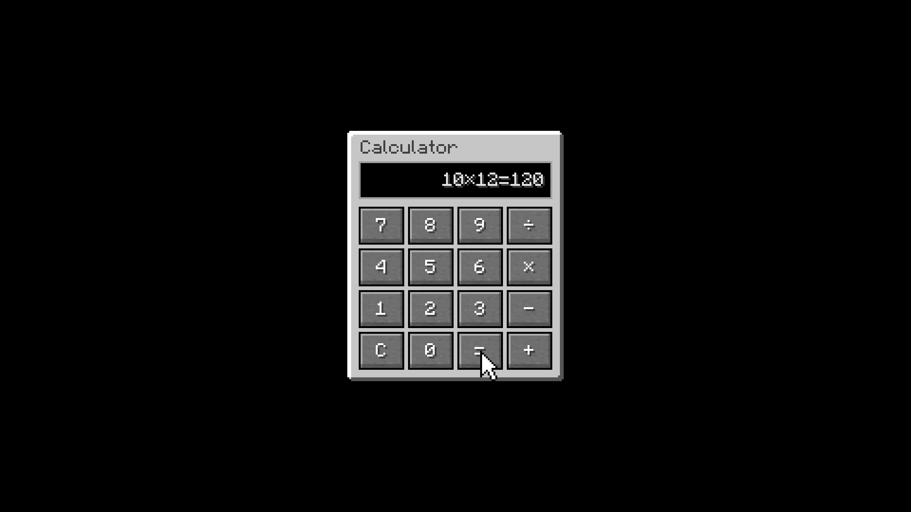

Deterministic motion graphics for Minecraft creators.
A Python engine renders pixel-perfect layers. A Premiere Pro plugin assembles the timeline in one click.
Stop hand-placing pixels.
Compile scenes from data.
Manual keyframing in NLEs results in single-use timelines, codec drift, and blurry pixel-art edges from non-integer scaling.
AgentMotion isolates the entire graphic generation into pure functions. Nondeterminism stops at the declarative scene definition; execution downstream produces byte-identical output.
{
"screen": "calculator",
"timeline": [
{ "do": "show" },
{ "do": "slide_in" },
{ "do": "cursor_move" },
{ "do": "hover" },
{ "do": "set_text" },
{ "do": "end" }
]
}Manual NLE Keyframing
- Crafting, furnace, trading, and inventory GUIs nudged frame by frame.
- Non-integer scaling blurs hard voxel pixel-art geometry.
- Codec drift shifts color and pixel edges across re-exports.
- Editing a layout or timing requires rebuilding the entire sequence.
AgentMotion Pipeline
- Python + Pillow engine renders tight PNG layers with alpha.
- NEAREST-only integer scaling matching game version 26.3 colors 1:1.
- Manifest.json specifies canvas, tracks, clips, positions, and keyframes.
- 163 golden tests guarantee byte-identical rendering.
The Premiere timeline matches the engine render.
Every rendered layer carries file and pixel hashes inside manifest.json. During timeline assembly, the CEP/ExtendScript plugin verifies each hash and produces a per-clip report.json.
Lossless-only MOV (qtrle/PNG) is strictly enforced. ProRes was excluded after measuring 47px drift against our maximum 2px threshold. UXP plugin architecture was rejected following a silent hang with no error.

Declarative scene in.
Editable timeline out.
Declarative Layout & Actions
Define screen layout and a timeline of actions (show, hide, pop, slide_in, set_text, hover, cursor_move, end) by hand or via an LLM agent.
PNG Layers + Manifest
Python + Pillow renders tight PNG layers with alpha, writes manifest.json (canvas, fps, tracks, clips, positions, scales, keyframes, hashes), and generates README_premiere.txt.
One-Click Timeline Assembly
The Premiere Pro CEP/ExtendScript plugin reads manifest.json, inserts clips on tracks, writes Position and Scale keyframes, verifies hashes, and writes report.json per clip.
Any LLM can author scenes.
Deterministic execution below.
Authoring agents operate with a dedicated skill guide, generated JSON Schema, and a self-correcting validator. Models never emit fragile video keyframes directly — they write structured intent.
Every validation error returns exact path locations and deterministic fixes. Conscious soft-rule breaks record through explicit allow and reason fields into the manifest.
{
"status": "error",
"location": "/timeline/action",
"fix": {
"op": "replace",
"location": "/timeline/action/do",
"value": "slide_in"
}
}Different architectures.
Different degrees of control.
Flat Video Clips
Fixed catalog of finished clips. Imported into your editor as flat video with no access to per-layer tracks, coordinates, or timing adjustment.
Cloud Generator
Generation lives on vendor infrastructure and delivers a flat shared file. Inability to adjust GUI tracks or re-time keyframes inside Premiere Pro.
Native NLE Timeline
Declarative JSON rendered to voxel pixel-art layers with NEAREST scaling. The CEP plugin builds native tracks, clips, and keyframes directly on your timeline.